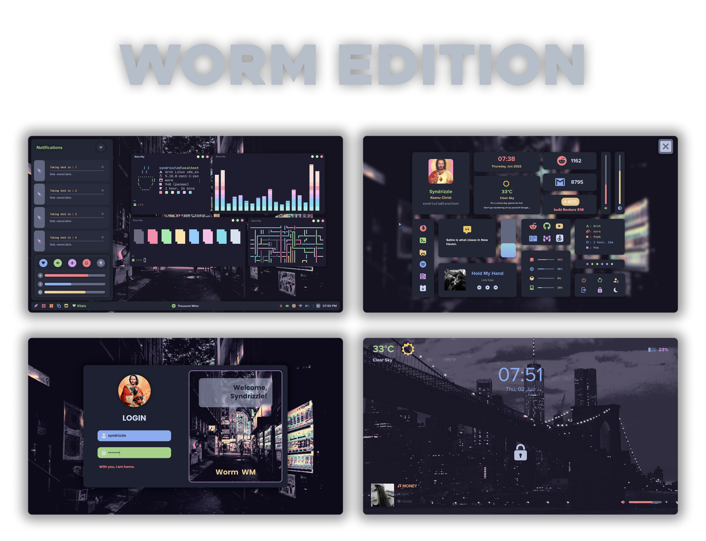
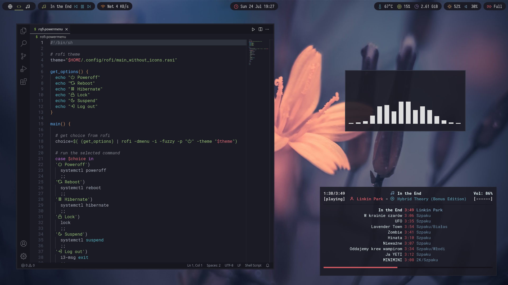
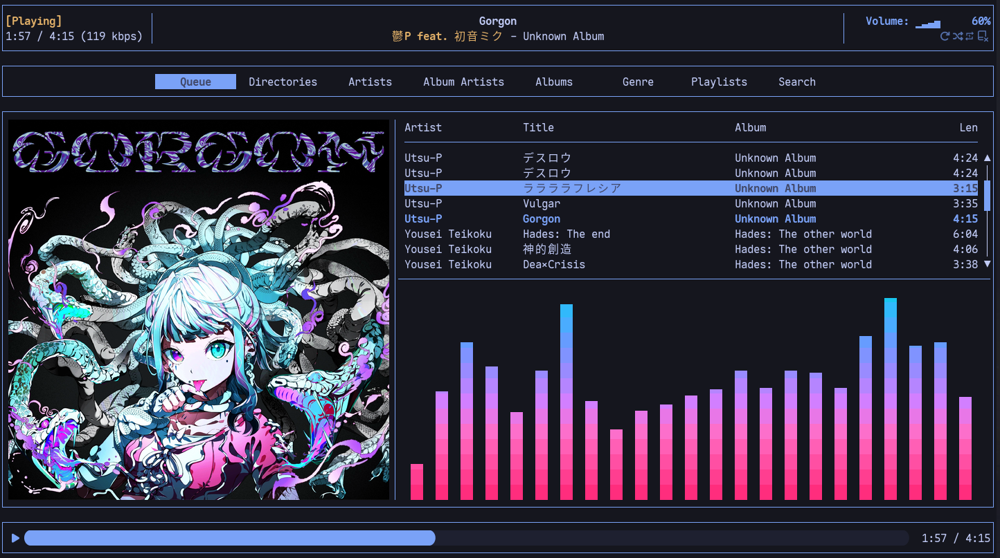

N1 / Worm / syndrizzle ↗
Coordinated pastel surfaces.
Original: 4300 × 3300.
A calm terminal aesthetic in blue and green. Soft mint, cool cyan, clear monospace type, and depth that stays quiet around the music.
Every panel, button center, hit area and responsive rule keeps its existing position and size.
Blue-green neutrals carry the screen. Mint marks primary actions and playback. Cyan adds a second, quieter signal.
Window chrome & player
Library & content panels
Search, menus & cards
Titles & primary text
Actions & active playback
Details & information
Artist, time & metadata
Essential borders & tracks
Default palette minimums across opaque surfaces: primary text 8.98:1 · secondary text 5.30:1 · essential edges 3.52:1. Status always includes a label or icon. Custom combinations must be checked again.
JetBrains Mono is the visual anchor. Clear letters, steady numbers and three useful weights. The app keeps its existing type sizes.
Upright. Normal tracking. Tabular numbers. UI ligatures off. System fallback for unsupported scripts; native symbols remain icons.
| App role | Weight | Existing pt |
|---|---|---|
| Wordmark | 600 | 24 |
| Playlist header | 600 | 54 |
| Home hero | 600 | 26 / 34 |
| Section heading | 600 | 23 |
| Track / library title | 500 | 14 |
| Supporting copy | 400 | 11–13 |
| Short caption | 400 / 500 | 10–11 |
Official font & license ↗
Preview fonts are local. No external font request is needed.
Thin inset borders, flat selection, mint play controls and precise metadata. The examples demonstrate paint and states for the future specification.
Focus the field to inspect its 2 pt inset stroke. Search placement and preview anchoring stay fixed in Maro.
Interactive styling specimen · no audio
The reference audio bars inspire the palette. A new visualizer would require a separate feature decision.
A lowercase wordmark with quiet confidence. The name remains Maro; the visual character shifts toward a personal music workstation.
Solid color first. Later, personal background images and theme colors can change the mood while geometry stays locked.
Original vector landscape. A 92–100% Ocean veil protects text contrast; blur adds atmosphere.
These are existing measurements, carried forward as fixed anchors for the next specification. The full guide defines the geometry and verification contract.
The visual-only implementation specification covers Home, library, playlist, search, player and state variations. Frame and hit-area comparisons must match the current baseline exactly.
Only this guide's appearance is interactive. Maro's application sources and layout remain unchanged.
Written guidelines ↗Implementation spec ↗Reusable tokens ↗Reference canvas ↗
The approved reference set supplies translucency, monospace rhythm and coordinated surfaces. Its palettes are interpreted through your greenish/bluish preference.

Coordinated pastel surfaces.
Original: 4300 × 3300.

Translucency and music metadata.
Original: 1920 × 1080.

Artwork alongside terminal rhythm.
Original: 1444 × 807.
All six original references and your three examples remain on the canvas. Screenshots are research material; the optional landscape in this guide is an original vector illustration.